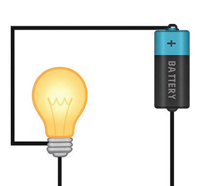
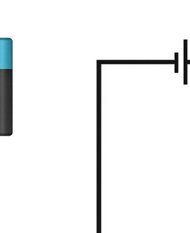

Ammeter connection: An ammeter, which measures current, is always connected in series with the circuit component(s) to ensure that the current flowing through the component(s) also flows through, and is measured by, the ammeter.
Components: For beginners, connect a single component, e.g., a resistor, bulb, in series with a source of e.m.f.However, depending on the requirement, if multiple components are used, they may be connected in parallel and/or series configurations, and then the system is connected in series with the source of e.m.f.
Other rules
- 1. Draw the circuit symbols first.
- 2. Using a ruler, draw all the connecting wires.
- 3. Make all the connecting wires and leads straight lines with corner angles of 90 degrees as shown in figure 2.6.
- 4. Do not cross any of the lines representing conducting wires.


Example 2.2
Draw an open and a closed electric circuit using a bulb, battery, switch and wire using the circuit symbols.
Resistance to an electric current
The flow of charge through a wire in a circuit can be compared to the flow of water through a pipe connecting two water reservoirs.Water flows through the pipe if there is a pressure difference between the two reservoirs.As it flows through a pipe, it loses energy due to friction between the moving water molecules and the pipe’s inner walls.Similarly, electric charges will flow between two points of a conductor if one point has a higher electric potential than the other; that is, there is a potential difference.As charges flow in a material, they encounter numerous collisions with atoms, resulting in a resistance to the flow of charges.This is known as electrical resistance, denoted by the letter R.In other words, electrical resistance is the opposition to the flow of electrical current through a material.
Any material that offers low resistance to the current flow is termed a conductor.On the other hand, a material is said to be an insulator if it does not allow the flow of electric current through it.Some materials, known as semiconductors, have resistance between that of conductors and insulators.The SI unit of electrical resistance is the ohm, denoted by the symbol Ω.It is worth noting that electrical current loses its energy as it flows through a conductor.